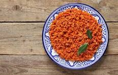

Jollof Rice Recipe

Sautee the paste and add the blended tomatos and paste with seasoning and broth to taste.
Add in washed rice and stir. Wait until done.
Ingredients
- Parboiled Rice
- Tomatoes
- Onions
- Red Bell Peppers
- Garlic
- Ginger
- Tomato Paste
- Chicken or Vegetable broth
- Vegetable Oil
- seasonings
- Proteins (Chicken)
Steps
- Blend tomatoes, bell peppers, onions, garlic, and ginger into a smooth paste.
- Heat oil in a pot, sauté the paste until thick and fragrant.
- Add tomato paste, broth, and seasonings. Cook until the sauce is rich and slightly reduced.
- Add rinsed rice and stir well to coat.
- Pour in enough broth or water to cover the rice, bring to a boil, then reduce heat to low.
- Cover and simmer until rice is cooked and liquid is absorbed.
- Add optional proteins or vegetables and cook until done.